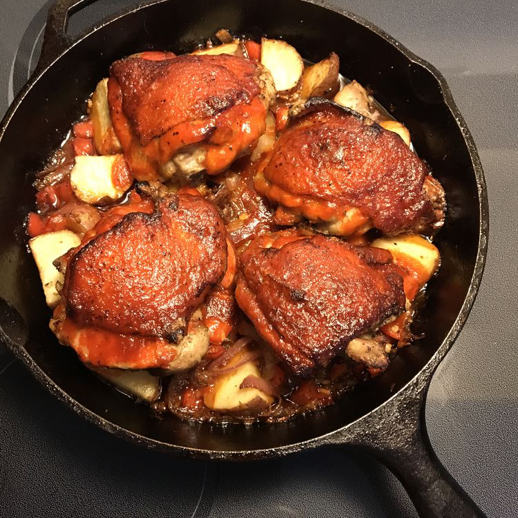

Back to Recipes
Sriracha Chicken and Veggies

Description
This one-pan Sriracha chicken and veggies recipe is a sweet and spicy delicious
chicken dish with veggies and potatoes cooked alongside.
This recipe is packed with flavor and heat. Perfect for a weeknight dinner!
Ingredients
- 2 chicken breasts, sliced
- 1 cup broccoli florets
- 1 red bell pepper, sliced
- 1 carrot, julienned
- 2 tablespoons sriracha sauce
- 1 tablespoon soy sauce
- 1 tablespoon olive oil
- Salt and pepper to taste
Steps
- Heat olive oil in a pan over medium heat.
- Add chicken slices and cook until browned.
- Add broccoli, bell pepper, and carrot; stir-fry for 5-7 minutes.
- Stir in sriracha sauce and soy sauce; cook for another 2 minutes.
- Season with salt and pepper to taste.
- Serve hot.